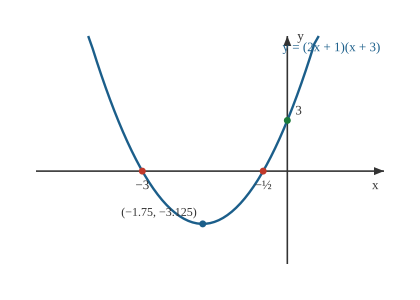

Based on Cambridge IGCSE Mathematics Core and Extended Coursebook (Karen Morrison and Nick Hamshaw), Chapter 14, printed pp.459–460 (Worked examples 21–22 style, Exercises 14.10–14.11). Printed pages were read from part_045.pdf (printed 459–460 = pages 8–9 of the part). Own wording and new numbers.
Key words: factorisation
When the coefficient of \(x^2\) is 1, a quadratic such as \(x^2+5x+6\) factorises as \((x+2)(x+3)\). If that coefficient is a number other than 1, more care is needed, because there may be more than one way to split the \(x^2\) term.
One reliable pattern is to write \(ax^2+bx+c=(px+r)(qx+s)\) with \(pq=a\) and \(rs=c\), then test pairs until the middle term is \(b\). First take out any common factor of all three coefficients. Another systematic method is to form the product \(ac\), find a factor pair of \(ac\) that adds to \(b\), split the middle term, and factorise by grouping.
Book: Worked example 21 style, printed pp.459–460. New numbers.
Factorise \(2x^2+7x+3\).
Answer: \((2x+1)(x+3)\)
Once the quadratic is factorised, the roots are immediate: \(2x^2+7x+3=(2x+1)(x+3)=0\) gives \(x=-\dfrac{1}{2}\) or \(x=-3\). These are the \(x\)-intercepts of the graph.

Book: Worked example 21(b)–(c) style, printed p.460. New numbers.
Factorise \(3x^2-11x-4\).
Answer: \((3x+1)(x-4)\)
Book: Worked example 22 style (the \(ac\) method), printed p.461. New numbers.
Factorise \(6x^2+11x-10\).
Answer: \((3x-2)(2x+5)\)
\(2x^2+3x+1=(2x+p)(x+1)\). What is the value of \(p\)?
Answer: \(1\)
The equation \(3x^2-14x+8=0\) factorises. What is the larger root?
Answer: \(4\)
To factorise \(10x^2+11x-8\) by grouping, you first compute the product of the coefficient of \(x^2\) and the constant term. What is that product?
Answer: \(-80\)
Marks: M = method, A = accurate answer (depends on M), B = independent mark. Leave exact values exact.